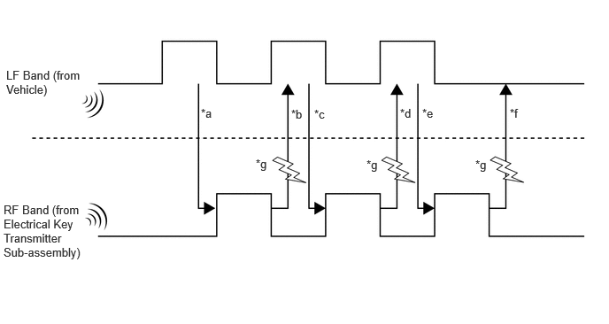

| Last Modified: 10-07-2025 | 6.11:8.1.0 | Doc ID: NM100000002GB23 |
| Model Year Start: 2024 | Model: Tacoma | Prod Date Range: [12/2023 - ] |
| Title: THEFT DETERRENT / KEYLESS ENTRY: SMART KEY SYSTEM (for Gasoline Model): DOOR CONTROL RECEIVER; 2024 - 2026 MY Tacoma [12/2023 - ] | ||
DOOR CONTROL RECEIVER
CONSTRUCTION
(a) The electrical key transmitter sub-assembly and electrical key and TPMS receiver assembly can operate on 2 different RF channels. When an electrical key transmitter sub-assembly is brought within an exterior detection area, key verification begins. If key verification fails due to radio wave interference, the channel will be switched and key verification will be performed again. The multi-channel system begins verification using the channel on which the last verification was successfully performed. When verification fails, the system switches to the other channel.
|
*a |
Exterior detection areas are created using LF waves (emitted from the vehicle at intervals of 0.25 seconds) to receive a response from the electrical key transmitter sub-assembly. |
|
*b |
When the electrical key transmitter sub-assembly is brought into an exterior detection area, it receives LF waves from the vehicle. Using RF waves, the electrical key transmitter sub-assembly responds to the vehicle. |
|
*c |
Upon receiving the response from the electrical key transmitter sub-assembly, the certification ECU activates the electrical key antennas (outside) one by one. Using LF waves, the certification ECU determines which exterior detection area the electrical key transmitter sub-assembly is in. |
|
*d |
The electrical key transmitter sub-assembly receives the LF waves from the vehicle and responds using RF waves. (The certification ECU recognizes which exterior detection area the electrical key transmitter sub-assembly is in.) |
|
*e |
The certification ECU sends registered key ID information to the electrical key transmitter sub-assembly using LF waves. (Up to 2 key IDs can be registered.) |
|
*f |
The electrical key transmitter sub-assembly sends the key ID information using RF waves. When the certification ECU receives it, verification completes. |
|
*g |
Radio wave interference (channel switching) |
(b) The multi-channel system changes channels when communication on the RF band (*b, *d and *f) is interrupted by radio wave interference. Refer to the table below to confirm when the system changes channels:
|
*b or *d is NG |
*f is NG |
|||
|---|---|---|---|---|
|
Condition |
RF waves cannot be received |
RF waves cannot be received properly |
RF waves cannot be received |
RF waves cannot be received properly |
|
Channel switching |
Channels will not be switched. |
Channels will be switched. |
Channels will be switched.* |
Channels will be switched. |
HINT:
*: Channel switching does not occur during vehicle interior certification after vehicle exterior certification completes for the entry lock operation.